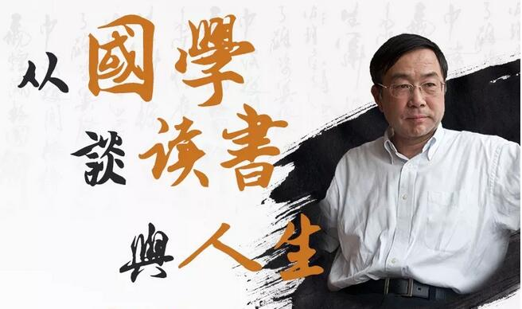

彼得德鲁克说：“一个企业只能在企业家的思维空间里成长,一个企业的成长被其经营者所能达到的思维空间所限制!”学习是打开思维空间即企业成长最快速的方式！

前言：
在信息爆炸时代，信息量呈几何数增长，人类的思维能力远没达到对其接受自如的阶段。求知欲使人类渴望把更多非我的东西转变成自我的东西，这符合人类进步的需要，但现代社会非我的知识无限浩大。
我们今天为什么要读书？
我们为什么要通过读书来获取知识，追求学问?
我们能从东西方的古人的智慧中获取什么?
人类的精神文明在一定程度上是由书籍构成的。世界各民族、各种精神文化是靠它们的书籍来记载、传承。书籍是文明的重要载体，讲希腊文明，离开希腊的神话、悲剧和哲学是无法想象的。同样，讲中华文化和精神世界，如果没有《大学》、《中庸》，如果没有《论语》《道德经》，就无从谈起。可以说我们未来的何去何从，没有了书籍，就失去了方向。
学以成人一一从国学谈读书与人生: 2018年9月8日，让我们跟随复旦大学张汝伦教授教授一起思考“读书与人生”的问题。
主讲:张汝伦
●复旦大学教授，哲学学院中国哲学教研室主任，博士生导师；
●上海市中西哲学和文化比较学会副会长，中国哲学史学会理事。
课纲
一、读书的人基本的生活方式
●人为什么要读书？
●学以成人一一读书是人性的需要
●中国古人对读书重要性问题的思考
●什么的人生?如何理解人生?人生目的为何
●读书对人生的根本意义:
a. 读书明理
b.提高自身修养和素养
C. 认识世界与人生
d.传承文明
e. 丰富人生， 活出人生的质量
●对人生的理解决定读书的态度
二、读什么书
●书的类型(实用类、消遣类、知识类、精神类、经典)
●经典的意义
●古人论学
●主要读经典
●文史哲的经典
三、怎样读书
●读书的目的
●以目的和问题为导向
●外向性读书与内向性读书4.精读和泛读5.笔记和读后感
四、什么是哲学
●哲学的一般意义
●中国哲学思想的一般特点
ａ.知行合一
b.一天人
c.同真善
d.重人生而不重知识论重了悟不重论证
e.重视传统， 创新不够
●中西方哲学的对比
五、读书与国学
●国学之根本要义一一内圣外王、成已成物事在人为，要做事，先做人，这是中国传统哲学的基本思路
只有办不到的人，没有做不到的事，修身是事业成功的起点，修已以安人，修身就是自我管理，反求诸已， 推己及人，吾道一以贯之，忠恕而已，《大学》之道是中国管理思想的总纲
●道术相参，以道统术
道与术的关系，是价值理性与工具理性的关系：没有道，人生没有意义与方向，没有原则没有术，无法处理纷纭复杂的事务以道统术，才能光明正大，无往不利
●国学与哲学
时间与地点
时间：2018年9月8日
地点：深圳清华大学研究院
报名咨询：
请在右侧留言或致电400-115-1005（12小时*7天）报名
获取本周课程表请电话咨询400-115-1005（12小时*7天）
温馨提示：
1、为了便于您更全面的了解课程，有意向报读的话可以申请免费试听半天正式课程（推荐上午）。若申请下午继续试听，需填写报名表及缴纳报名费5000元。
2、请遵守课堂纪律，因您是试听学员，所以不主动邀请您参与发言和讨论，谢谢配合。若有相关疑问，可在课程所预留的互动时间或课间与老师或同学交流。请自带记录所用笔与笔记本；请上课时将手机调至震动或静音，并在教室外通话。
国学经典学堂

国学经典学堂汇聚国学一流专家学者，综览古今经典思想智慧，解读历史兴替得失。旨在帮助创业者、企业家研习并践行国学。在复杂的企业经营环境中，学会规避风险、把握商机、赢得优势、参透事物本质。探索修身、治企有效路径。
你走得有多远，取决与谁同行。
加入国学班，与卓越者同行！
联系方式：400-115-1005 邮箱:fub@tsinghua-sz.org
地址：深圳市南山区高新科技园南区高新南七道19号深圳清华大学研究院五楼


版权所有：深圳清华大学研究院 备案：粤ICP备11063336号-3 深圳网站建设：沙漠风